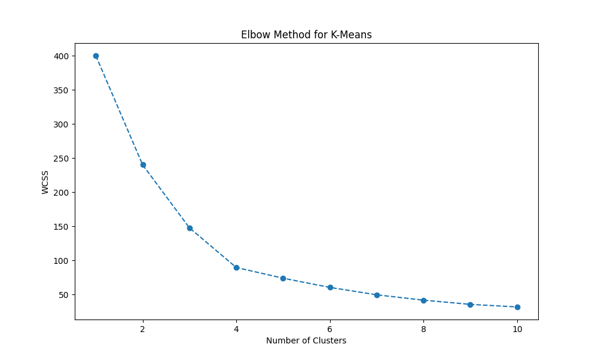
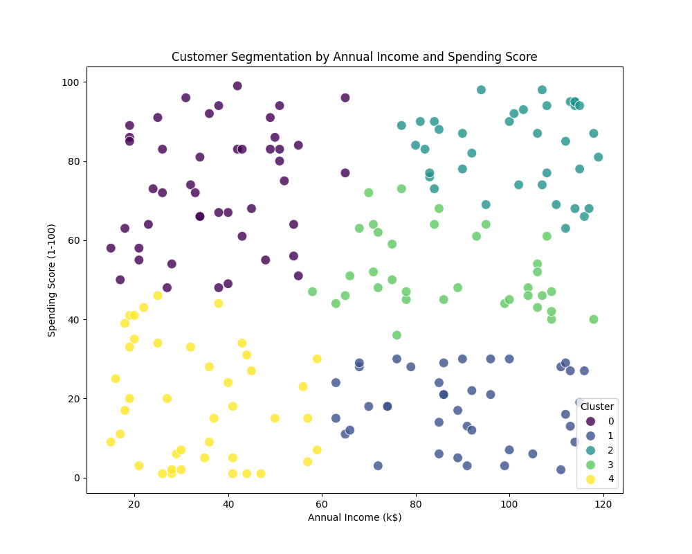

🯠Visão Geral do Projeto
Este projeto demonstra a aplicação de técnicas de Machine Learning para realizar a segmentação de clientes com base em seu comportamento de compra e caracterÃsticas demográficas. A segmentação de clientes é uma estratégia crucial para empresas que buscam entender melhor sua base de consumidores, personalizar campanhas de marketing e otimizar a oferta de produtos e serviços.
Utilizando o algoritmo de clustering K-Means, este projeto agrupa clientes em segmentos distintos, permitindo análises aprofundadas e tomadas de decisão mais assertivas.
🔬 Metodologia
A metodologia empregada neste projeto segue as seguintes etapas:
- Geração de Dados FictÃcios: Criação de um dataset com informações como CustomerID, Age, AnnualIncome e SpendingScore.
- Pré-processamento: Padronização dos dados usando StandardScaler para garantir que todas as features contribuam igualmente.
- Método do Cotovelo: Identificação do número ideal de clusters através da análise do WCSS (Within-Cluster Sum of Squares).
- Aplicação do K-Means: Agrupamento dos clientes em 5 segmentos distintos.
- Visualização: Criação de gráficos para análise dos resultados.
📊 Resultados e Visualizações
Método do Cotovelo (Elbow Method)
O gráfico do Método do Cotovelo ajuda a determinar o número ideal de clusters ao identificar o ponto onde a redução do WCSS começa a diminuir significativamente.
Segmentação de Clientes
Visualização dos 5 segmentos de clientes baseados em Renda Anual e Pontuação de Gastos. Cada cor representa um cluster diferente.
✨ Principais CaracterÃsticas
🤖 Machine Learning
Utilização do algoritmo K-Means para clustering não supervisionado.
📈 Visualizações
Gráficos profissionais com Matplotlib e Seaborn.
🧪 Testes Automatizados
Suite completa de testes unitários com alta cobertura.
🔄 CI/CD
GitHub Actions para integração e deploy contÃnuos.
📠Documentação
README detalhado e código bem documentado.
🯠ReprodutÃvel
Random seeds fixos garantem resultados consistentes.
🚀 Como Usar
1. Clonar o Repositório
git clone https://github.com/galafis/Customer-Segmentation-Analysis.git
cd Customer-Segmentation-Analysis2. Criar Ambiente Virtual (Recomendado)
python3 -m venv venv
source venv/bin/activate # Linux/macOS
# venv\Scripts\activate # Windows3. Instalar Dependências
pip install -r requirements.txt4. Executar o Script Principal
python3 src/main.py5. Executar os Testes
cd src
python3 -m unittest test_main.py -v📠Estrutura do Projeto
Customer-Segmentation-Analysis/
├── .github/
│ └── workflows/
│ └── tests.yml # GitHub Actions CI/CD
├── data/ # Dados gerados
│ ├── customer_data.csv
│ └── segmented_customer_data.csv
├── docs/ # Documentação e GitHub Pages
│ └── images/ # Visualizações
│ ├── elbow_method.png
│ └── customer_segments.png
├── src/ # Código fonte
│ ├── main.py # Script principal
│ └── test_main.py # Testes unitários
├── .gitignore # Arquivos ignorados pelo Git
├── README.md # Documentação principal
└── requirements.txt # Dependências do projeto🯠Project Overview
This project demonstrates the application of Machine Learning techniques to perform customer segmentation based on purchasing behavior and demographic characteristics. Customer segmentation is a crucial strategy for companies seeking to better understand their consumer base, personalize marketing campaigns, and optimize product and service offerings.
Using the K-Means clustering algorithm, this project groups customers into distinct segments, enabling in-depth analysis and more assertive decision-making.
🔬 Methodology
The methodology employed in this project follows these steps:
- Dummy Data Generation: Creation of a dataset with information such as CustomerID, Age, AnnualIncome, and SpendingScore.
- Preprocessing: Data standardization using StandardScaler to ensure all features contribute equally.
- Elbow Method: Identification of the ideal number of clusters through WCSS (Within-Cluster Sum of Squares) analysis.
- K-Means Application: Grouping customers into 5 distinct segments.
- Visualization: Creation of charts for results analysis.
📊 Results and Visualizations
Elbow Method
The Elbow Method chart helps determine the ideal number of clusters by identifying the point where the WCSS reduction begins to decrease significantly.
Customer Segmentation
Visualization of 5 customer segments based on Annual Income and Spending Score. Each color represents a different cluster.
✨ Key Features
🤖 Machine Learning
K-Means algorithm for unsupervised clustering.
📈 Visualizations
Professional charts with Matplotlib and Seaborn.
🧪 Automated Tests
Complete unit test suite with high coverage.
🔄 CI/CD
GitHub Actions for continuous integration and deployment.
📠Documentation
Detailed README and well-documented code.
🯠Reproducible
Fixed random seeds ensure consistent results.
🚀 How to Use
1. Clone the Repository
git clone https://github.com/galafis/Customer-Segmentation-Analysis.git
cd Customer-Segmentation-Analysis2. Create Virtual Environment (Recommended)
python3 -m venv venv
source venv/bin/activate # Linux/macOS
# venv\Scripts\activate # Windows3. Install Dependencies
pip install -r requirements.txt4. Run Main Script
python3 src/main.py5. Run Tests
cd src
python3 -m unittest test_main.py -v📠Project Structure
Customer-Segmentation-Analysis/
├── .github/
│ └── workflows/
│ └── tests.yml # GitHub Actions CI/CD
├── data/ # Generated data
│ ├── customer_data.csv
│ └── segmented_customer_data.csv
├── docs/ # Documentation and GitHub Pages
│ └── images/ # Visualizations
│ ├── elbow_method.png
│ └── customer_segments.png
├── src/ # Source code
│ ├── main.py # Main script
│ └── test_main.py # Unit tests
├── .gitignore # Git ignored files
├── README.md # Main documentation
└── requirements.txt # Project dependencies